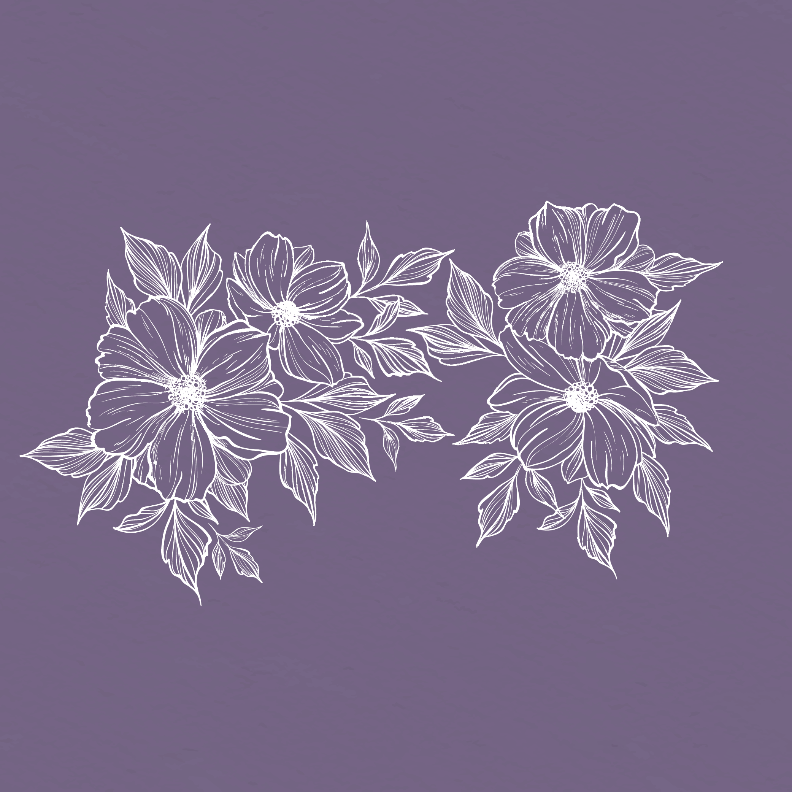
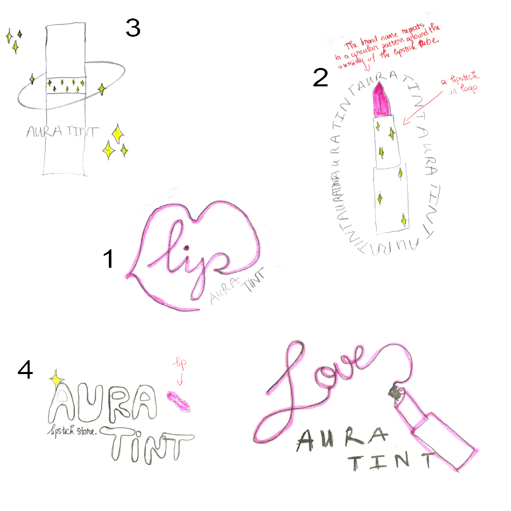
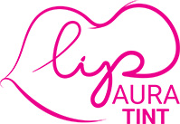
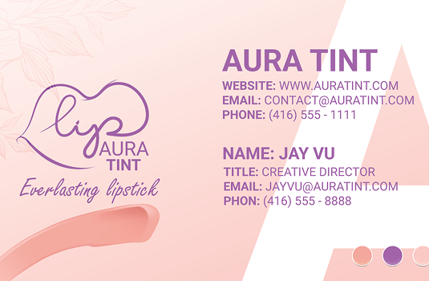
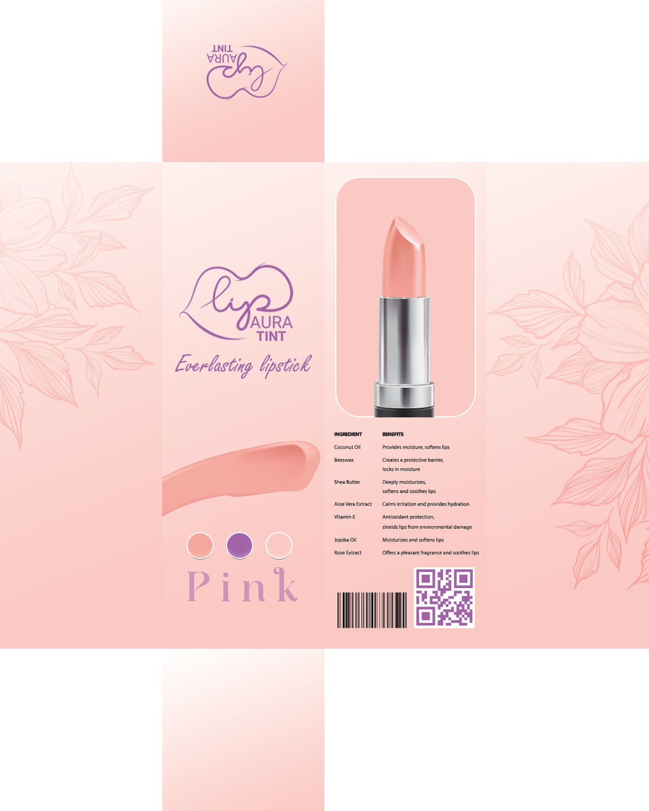

Aura Tint is a branding and packaging project for a fictional lipstick brand that celebrates individuality through unconventional lipstick shades, encouraging users to choose colours based on confidence and personal preference.
OVERVIEW
Aura Tint is a branding and packaging project for a fictional lipstick brand that celebrates individuality and self-expression. The brand focuses on unconventional lipstick shades, encouraging users to choose colours based on personal preference rather than trends.
GOALS
The goal of Aura Tint was to create a soft, empowering brand identity that promotes confidence without pressure. The project aims to balance familiarity within the cosmetics market while introducing a unique and expressive visual direction inspired by natural and organic elements.
VISUAL DIRECTION

The visual language of Aura Tint was inspired by cherry blossoms and natural Japanese elements. Soft pink and purple tones were chosen to reflect both femininity and individuality while maintaining a calm and welcoming aesthetic.
The floral elements were used to create a sense of organic beauty, reinforcing the idea that makeup should enhance personal identity rather than define it.
LOGO DEVELOPMENT
The logo exploration began with multiple sketches focusing on lips and lipstick forms. Different approaches were tested, including illustrative lipstick shapes, lip-inspired outlines, and expressive typography.
The final logo was selected for its simplicity and fluid form, combining a lip-inspired silhouette with handwritten typography. This creates a soft and approachable identity that aligns with the brand’s message of confidence and self-expression.


BRAND APPLICATION
The brand identity was applied across business cards and packaging to ensure consistency. A custom cherry blossom brush was created in Illustrator and used to enhance cohesion across the branding materials.
The packaging was designed as a six-panel box layout, balancing structure with decorative elements to maintain both clarity and visual interest.


FINAL OUTCOME
The final outcome presents Aura Tint as a soft, expressive, and confidence-driven cosmetic brand. The combination of organic visuals, gentle colour palettes, and minimal typography creates an identity that feels approachable while still standing out.
The project successfully communicates its core message: encouraging users to embrace individuality and choose what they genuinely love.
REFLECTION
This project strengthened my understanding of how branding can shape emotional connection and user perception. I learned that visual identity is not only about aesthetics, but also about communicating values and building confidence through subtle design choices.
Moving forward, I want to continue exploring how soft visual systems and intentional branding can create more meaningful user experiences.